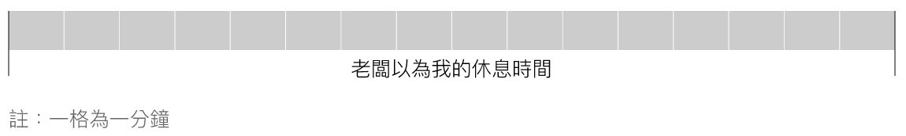
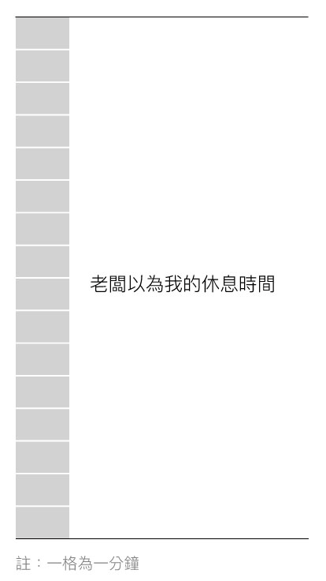

文/李又如攝影/鐘聖雄
2017年4月20日，台北捷運南勢角站一名約40歲的司機員在執勤中昏倒，送醫不治。司機過去無重大疾病記錄，北捷公司也表示「該名司機前天休假，昨天和今天都正常出勤，並沒有超時工作」，死因還有待調查。
但公司第一時間的處理，卻引起了基層員工的不滿。北捷公司在事發後受訪指出，「捷運列車主要為自動駕駛，司機員只需關門和異常處理」，甫成立的「北區捷運電聯車駕駛產業工會」認為公司忽視專業，「一個司機員該注意的事項、該具備的專業，絕對不是台北捷運公司發言單位所想的那麼簡單。」
《鏡傳媒》在《玩命運輸ONLINE》專題採訪期間，也在抗爭現場遇到了北捷司機。2月9日，台鐵產業工會為抗議春節依法休假卻被懲處，發起遊行從交通部至總統府，有一群北捷司機默默到場聲援，「我們也覺得自己被當成機器人看待」，呼應台鐵員工改革班表的訴求，北捷司機員志明（化名）這麼說。
從台北市中心到周邊市鎮，台北捷運是目前最重要的交通骨幹。而順暢與否，列車裡的司機員擔綱著重責大任。雖然捷運在正常狀況都是自動駕駛，遇上異常才需手動控制，但要能維持「正常狀況」，司機有哪些事要做？
列車光是行駛一站，司機員要確保前方軌道淨空、時時注意約50個燈號狀況、確認行經線圈時感應正常、確認站名顯示及廣播正確、注意列車確實減速無異常抖動、確認列車停準正確位置、確認車廂門有開啟、觀察旅客及月台狀況、準確關門而不夾到旅客⋯⋯。北捷最長的站距是3分35秒，最短站距只有1分鐘，司機被要求在短短幾分鐘內做完上述所有的事，一天要重複150次。
更難的是，員工也被要求要做到「機器人」的標準。
柯文哲調薪後 工作反而更高壓
捷運全年無休，24小時輪班，早、午班主要是開車，晚班則是收車、發車。標準的8小時班，有加班費、有夜間津貼，卻還是有司機大嘆吃不消。
「機器人式」的管理，從班表就能看見端倪。志明提到，「光是開車，一天就有40個班，15分鐘一個，我每天上班的時間可能都不一樣。」像是要把每個員工上班時間發揮到極大化，塞進以分鐘為單位的空格裡。
上述提到的，還只是「正常狀況」。捷運載的是人，旅客的樣態千奇百怪，而一班車只有一個司機，車裡各式各樣的狀況，全靠他一人處理，「處理超過一分鐘，就會影響全線的運作。」志明說道。只要一分心，代價不只是整個系統運作崩潰，還關乎旅客安全，相當高壓。
工作強度高，過去的司機員「工時比」 大約是7成，也就是一天工時8小時中有5個半小時在開車。但在2015年台北市長柯文哲上任後，雖調薪增加員工福利，公司卻以「縮卡」方式提高工作強度。
志明解釋，每張任務卡規範了每天上班8小時內要做的事，司機就依循著任務卡跑車、休息。而「縮卡」是指原本100張任務卡才能做完的工作，被壓縮成90張，也就是原本需要100個司機才能做完的事，由90人來分擔，一個司機分配到的工作自然變多，光是駕駛時數就硬生生多出1小時。
休息時間零碎化 連尿尿都要用跑的
不僅如此，連短暫的休息時間都被壓縮。志明舉例，一般站點停車15至18秒，大站頂多停30秒，在極短的時間內確定開、關門狀況，跑完起點站、終點站一圈，才能下車休息，「最大圈就是淡水到象山，有2小時不能下車」。他苦笑道，駕駛室裡會放尿袋，但駕駛室裡有監視器，加上行車時間要注意的事情這麼多，根本沒時間用，更遑論其他基本的生理需求。
駕駛時數之外，被當作「休息」的待命時間則是從列車表到站時間開始計算。班次與班次之間，大約有16分鐘的空檔，被各種細小的事情給延誤，志明舉例，「尖峰時間通常都會有2至3分鐘的誤點，從車上走回車班休息要3分鐘，還要裝水、上廁所，再花3分鐘走回車上，都是用趕的。」表定吃飯時間有35分鐘，也都要扣掉這些。
 7,000支攝影機盯著看 員工大嘆管理不人性
公司的嚴格管理也漸漸讓員工喘不過氣，「就算有特休假，也都是公司安排，自己想自由選擇哪天請假，就要扣考績。也因為每一個人的時間都被排得很緊，一有人臨時生病請假，就得請前一班人的加班、後一班的人提早上班來因應，請假那個人就會被扣分扣得很慘。」志明提到，「甚至有人才請1天病假，考績就掰掰了」，而考績不但影響到年終獎金，還關乎加薪升等的可能。
而遍佈捷運的7、8千支攝影機，原先是為了預防突發事件，如今卻成為管理人員監視、查核的工具，「光是司機員，一天就有300支攝影機對著我們。只要旅客一投訴，他們就會調帶子出來看。」志明說。
志明舉最常見的「開關車門夾到旅客」為例，當離站警示音響起，司機員準備關門，常見的景象就是旅客衝上來想賭賭運氣，若被車門夾到，「這時候，倒霉的就是司機」，志明感嘆：「管理人員會調各個角度的帶子來看，執著於那一瞬間究竟發生了什麼事。只要那0.1秒有一隻後腳出現，我們就會被懲處。」
志明無奈地說，雖然相關規定白紙黑字寫得很清楚，但一班捷運有6個車廂、24個門，短短幾秒內幾百個旅客在衝，「是要我們看得多清楚？」
他列舉司機員最常因投訴而被懲處的幾個原因，除了關門時機不當，還有加減速異常沒有廣播，「因應尖峰時間，車輛常常會因調整班距而加減速，正常應該要廣播告知旅客，但站與站之間行進時間並不長，如果提醒了旅客加減速異常，卻來不及播到站廣播，就麻煩大了。」
再來則是朝夕令改的標準作業程序（SOP），志明舉例，「假設到站的時候車門沒開，我們就會立刻轉手動模式把門打開。但最近改了，變成要先回報、等行控中心指示、才做處理。每件事情當然都有標準流程，可是公司更改的頻率很高，長一點兩個月、短一點甚至半個月就改一次，實作上有些習慣的動作改不掉就被罰，也不知道為什麼要改。甚至有管理階層偶爾當替代人力下來開車，還會搞不清楚現在的SOP到底改成怎樣。」
諸如此類白紙黑字訂下的規則，在實際的工作現場都遇上問題，管理人員卻只會按規定做事，讓司機常常吃悶虧。志明就提到，比起開車，自己比較喜歡輪到進機廠調車的班，「裡面有比較多要實際動手處理的作業，雖然危險性很高，工作要更謹慎，但沒長官、沒旅客，能用聰明的方法把事情做得又快又好。」
司機員們企求更「人性化」的管理，「捷運是機器，你當然可以要求它24小時運轉，但開車的是人。」志明說。
志明憶起當初會想進捷運公司服務，是看上類公務體系較為穩定，實際上卻不若想像中風光。起薪3萬，實領頂多4萬，沒有休假的自主性，當工作內容、強度有所變化，想跟公司反映也毫無回音，或換來令人哭笑不得的回應。志明舉例，2015年縮卡之後，司機員不斷反映工作強度太高，公司就拍了提神點穴的教學影帶在出勤前播放。
「久了，熱情也慢慢被磨滅。」志明說，「其實所謂的成就感，除了發揮專業以外，不過就是小朋友下車跟你說句謝謝，就覺得自己的工作很有價值了。」背負著台北運輸核心的重責大任，司機員只是希望，工作能夠更像「人」一些。
列車上的大小事全由司機一人負責。反應、處理超過一分鐘，就會影響到全線的運作。北捷：目前沒有人力不足問題
時任台北捷運公司行車處長楊泰良日前（2017年3月1日）接受《鏡傳媒》訪問時曾回應，認為並沒有人力、休息時間不足的問題，「目前司機員有716位，沒有人力不足。8小時的上班時間，大約6小時是駕駛時數，一趟車回來有16分鐘時間可以休息，吃飯時間也至少有40分鐘，加上我們週休二日，都符合、甚至優於《勞基法》。」
針對休假不夠彈性的部分，楊泰良指出，基本上會在月底排班表時詢問員工有什麼特殊安排，如果臨時要請假，就提前3天跟公司提出。志明則回應，雖然可以填需求，但司機員人數眾多，如果太多人填同一天就要抽籤，基本上很難真正在想休的時候休假。
而考績的考核基準，楊泰良也認為沒有過於嚴格的問題，「如果執勤出紕漏、被投訴、錯誤操作設備、違反紀律等都會被扣分，平時也會針對司機員的表現評分。年終時就依照不同表現分發考核獎金，表現好就拿多一點，跟公務人員考核不完全相同，完全是根據他實際表現的好壞。」
志明指出，並不是合法就合理，工作強度太高會影響到行車安全，希望工時比可以降回7成，也就是每天的駕駛時數大約在5個半小時。而既然司機下車休息從月台走回車班的時間是固定的，就應該把在月台上行走的時間也納入駕駛時數裡，讓休息時間是真正的休息，而不是都已經只有16分鐘還要被吃掉。